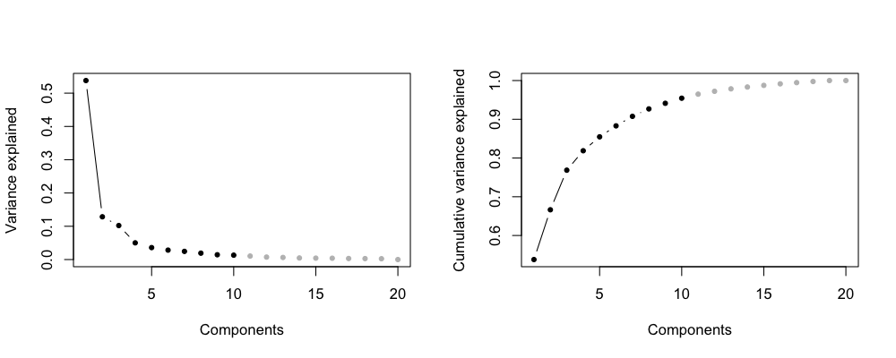
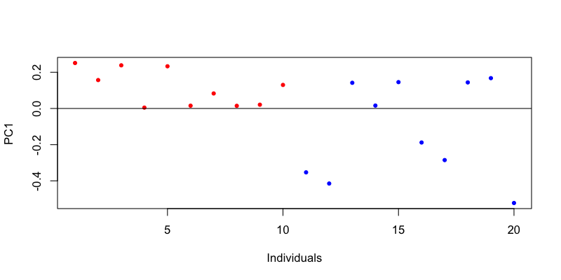
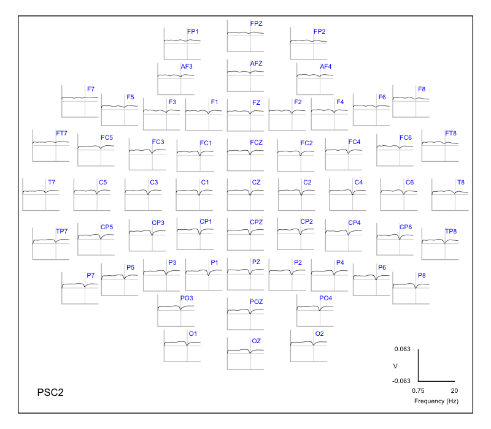
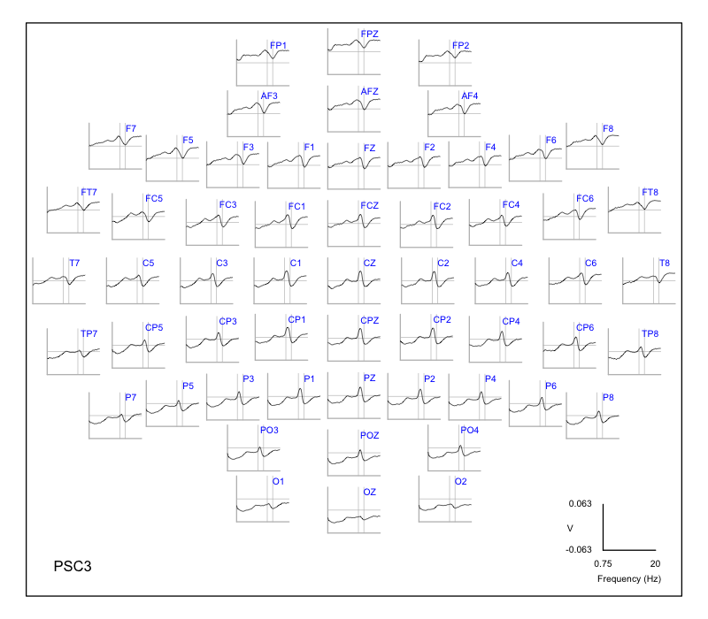
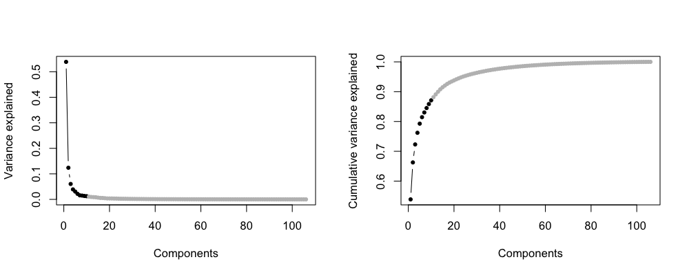
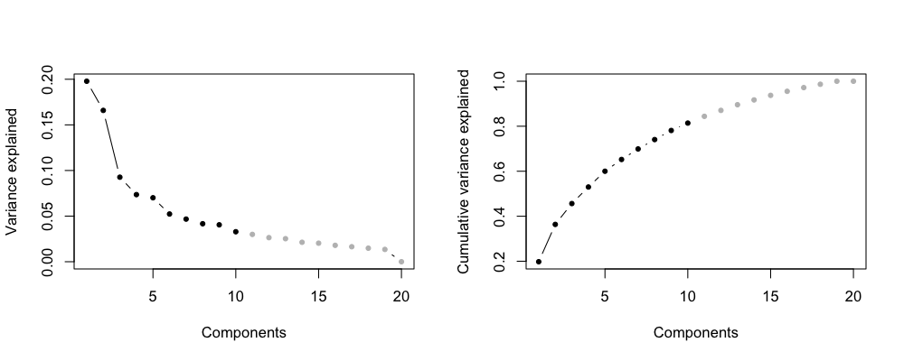
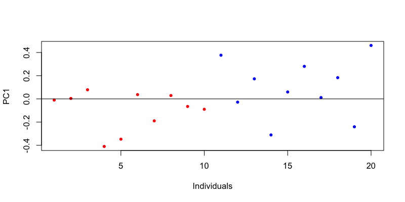
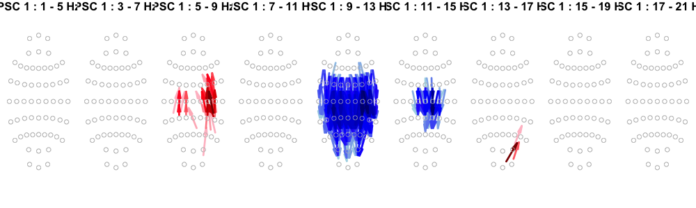
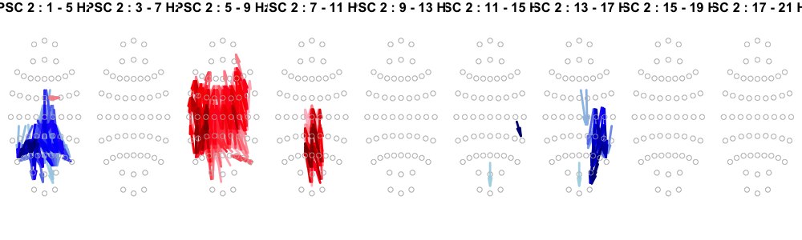

5.5. Dimension reduction
Many metrics derived from the analysis of the sleep EEG can be of relatively high dimension, with repeated values stratified by frequency, channel (or channel pair), sleep stage, etc. Here we consider a standard approach to dimension reduction -- principal components analysis (PCA) -- that is embedded within Luna.
Because of the typical context in which this is applied within Luna,
the command that implements this is called
PSC -- principal
spectral components. That is, typically (although not
necessarily) PCA (as implemented via singular value
decomposition, SVD) is applied to the outputs of prior spectral analysis.
We'll start by looking at reducing sets of metrics derived from this N=20 dataset, considering a) multi-channel EEG power spectra and b) cross-channel connectivity metrics (PSI from the previous step).
For the PSD example only, we'll also consider the scenario where a comparable (and larger) external sample is used to generate the PC solution, and is used to project the N=20 sample into that space. Here, we'll derive these using the remaining N=106 indepenent control subjects from the GRINS study.
Sample size and PCA
In this walkthrough, note that the number of observations (n) is typically very small relative to the number of variables, which, depending on the nature of the data and covariance structures, can impact the stability of extracted components. At the extreme, with only 20 observations, we cannot estimate more than 20 components from the data (nor would we want to, in these contexts). Typically, looking at only the first few components that explain the bulk of the variance will be sufficient. Alternatively, as we'll do in the second and third steps here, one can use component loadings calculated on comparable but larger samples, and project this smaller number of individuals into the pre-defined component space. (Note: the larger set of EDFs is not available as part of this walkthrough; we'll only use the results derived from those studies, applied to the N=20 set.)
PS*-what?
It just so happens that this step uses commands with superficially similar labels: to clarify
- PSD : power spectral density
- PSI : phase slope index
- PSC : principal spectral components
As noted, above, here we'll be using PSC to reduce the outputs
of prior PSD (single-channel power) and, second, PSI
(cross-channel connectivity) runs.
PSD
We'll first run through the PSC steps for the power spectra metrics
(from PSD) and then below turn to connectivity (from PSI).
Inputs
As previously described here, we'll generate N2 and REM power
statistics for all channels, using just Welch (PSD) to speed things up:
luna c.lst -o out/welch.db \
-s ' FREEZE F1
TAG stg/N2
MASK ifnot=N2 & RE
CHEP-MASK sig=${eeg} ep-th=3,3
CHEP sig=${eeg} epochs & RE
PSD sig=${eeg} dB spectrum min=0.5 max=20
THAW F1
TAG stg/R
MASK ifnot=R & RE
CHEP-MASK sig=${eeg} ep-th=3,3
CHEP sig=${eeg} epochs & RE
PSD sig=${eeg} dB spectrum min=0.5 max=20 '
We'll extract power metrics separately by stage:
destrat out/welch.db +PSD -r F CH stg/N2 > res/spectral.welch.n2.allchs
destrat out/welch.db +PSD -r F CH stg/R > res/spectral.welch.rem.allchs
We'll also extract band power and Welch PSD metrics from PSD for
(for later use when testing for association).
destrat out/welch.db +PSD -r B CH stg/N2 > res/spectral.welch.band.n2.allchs
destrat out/welch.db +PSD -r B CH stg/R > res/spectral.welch.band.rem.allchs
Our inputs for PSC (here considering N2 spectra only) are therefore in the form:
head res/spectral.welch.n2.allchs
ID CH F PSD
F01 Fp1 0.5 24.0111340371867
F01 Fp1 0.75 21.1436160552527
F01 Fp1 1 19.8732328667012
F01 Fp1 1.25 18.4895472365441
F01 Fp1 1.5 17.095200269088
F01 Fp1 1.75 15.9320088621423
F01 Fp1 2 14.6315232808984
F01 Fp1 2.25 13.7661156409848
F01 Fp1 2.5 13.3606847471507
...
In total, this yields 4,503 metrics per individual i.e. (57 * 79 frequency
bins, 0.5 to 20 Hz in 0.25 Hz increments). We'll use PSC to
reduce these to a small, nonredundant set of components.
N=20 PSC
The --psc command is a
command-line option that takes the outputs of other Luna commands, or
really any dataset that is structured by channel (CH) -- or
channel-pair (CH1 and CH2) -- and frequency (F). It expects
inputs in long format, meaning that it will look for these labels in
the header row (assuming tab-delimited text files as inputs).
Application of PSC to different input types
The
values of these stratifying factors aren't actually used other
than to define variables: i.e. you could feed hypnogram-based
macro-architecture metrics into --psc. Although they don't have any
intrinsic "channel" or "frequency" attributes, you can simply set those factors to
arbitrary values, e.g. CH to - and F to 0.
The --psc command is a special one, in that (unlike most Luna commands) it does not require individual-level signals as inputs (i.e. EDF/annotations).
Rather, the primary option for --psc is spectra, which takes one (or more) files (here tmp/psd.n2):
luna --psc -o out/psc-psd-n2.db \
--options spectra=res/spectral.welch.n2.allchs nc=10 v=PSD f-lwr=0.75 norm
The other relevant options are:
-
nc: the number of principal components to extract -
v: the name of the variable(s) in the input file(s) to extract, here justPSD(i.e. the input file may have many more columns that we don't want to include) -
norm: standardize each variable to unit variance, as well as mean-centering prior to SVD; this is equivalent to performing a PCA on a correlation (rather than covariance) matrix -
f-lwr: a lower-bound on frequencies to read in (there is also af-uproption); although we output power values from 0.5 Hz upwards in the step above, just to illustrate this option, here we'll reduce inputs to frequencies 0.75 Hz or above
We also specify an output database (out/psc-psd-n2.db). On running
the above, you should see the following in the console log:
reading spectra from tmp/psd.n2
restricting to 0.75 <= F
converting input spectra to a matrix
found 20 rows (observations) and 4446 columns (features)
finished making regular data matrix on 20 observations
after outlier removal, 20 observations remaining
standardizing data matrix
about to perform SVD...
done... now writing output
Because we excluded the 0.5 Hz values in this particular example, we only have 4446 features per individual: this command constructs a matrix that is 20 rows (individuals) by 4446 columns (features/variables). There are various outlier/winsorization steps that can be put in place here, but we'll skip those for now. The primary activity is to perform the SVD and output results.
In R, we'll take a look:
library(luna)
k <- ldb( "out/psc-psd-n2.db" )
There are four main tables generated by PSC:
lx(k)
PSC : I J PSC I_J
-
I: output per component, ordered by variance explained (VE) - i.e. how important is this component? -
PSC: the scores on each component for each individual - i.e. how does individual X score on this component? -
IxJ: the loading of each variable on each component (right singular vectors, or the V matrix from SVD, the PCA principal/axes) - i.e. what does this component reflect? -
J: some book-keeping information on what channels/frequencies, etc. each variable corresponds to (rather than duplicate this in theIxJoutput for every component)
Components
First looking at I: (note: minor known issues - ignore the ID
column, it should be . for this table, but is currently set as the
ID of the last person in the file; we omit it below):
k$PSC$I
I CVE INC VE W
1 0.5378829 1 5.378829e-01 2.131598e+02
2 0.6663920 1 1.285091e-01 1.041906e+02
3 0.7685827 1 1.021907e-01 9.291103e+01
4 0.8187821 1 5.019945e-02 6.511949e+01
5 0.8547024 1 3.592027e-02 5.508474e+01
6 0.8830514 1 2.834905e-02 4.893626e+01
7 0.9075982 1 2.454672e-02 4.553635e+01
8 0.9268228 1 1.922464e-02 4.029866e+01
9 0.9412630 1 1.444021e-02 3.492595e+01
10 0.9544258 1 1.316283e-02 3.334542e+01
11 0.9649178 0 1.049193e-02 2.977071e+01
12 0.9722538 0 7.336020e-03 2.489383e+01
13 0.9785586 0 6.304841e-03 2.307802e+01
14 0.9832966 0 4.737974e-03 2.000589e+01
15 0.9875362 0 4.239587e-03 1.892445e+01
16 0.9915230 0 3.986795e-03 1.835158e+01
17 0.9946590 0 3.136019e-03 1.627612e+01
18 0.9975394 0 2.880426e-03 1.559875e+01
19 1.0000000 0 2.460564e-03 1.441713e+01
20 1.0000000 0 1.379291e-31 1.079418e-13
Plotting the (cumulative) variance explained by each component:
d <- k$PSC$I
par(mfcol=c(1,2))
plot(d$VE, type="b", col=ifelse(d$INC, "black", "gray"),
pch=20, xlab="Components", ylab="Variance explained" )
plot(d$CVE, type="b", col=ifelse(d$INC, "black", "gray"),
pch=20, xlab="Components", ylab="Cumulative variance explained" )

So, these 10 components explained 95% of the variance across the 4000+
metrics (and only 4 components are needed to explain 80%). Note that
Luna will output the full set of components in this table (i.e. up to
20 here) but flag the requested components with INC set to 1. The
other tables have only nc components output, however.
Scores
Turning next to the scores, which are defined per individual per component:
head( k$PSC$PSC )
ID PSC U
F01 1 0.251223388
F02 1 0.156938734
F03 1 0.238397154
F04 1 0.004742811
F05 1 0.233149156
F06 1 0.015339604
...
Each individual has 10 rows (PSC from 1 to nc, i.e. 10) with the
score value encoded U. Here we plot the first component, that
explains 53.7% of the total variance, for the 20 individuals:
d <- k$PSC$PSC
plot( d$U[ d$PSC == 1 ] , pch = 20 ,
col = rep( c("red", "blue" ) , each=10 ) ,
ylab = "PC1" , xlab = "Individuals" )
abline( h = 0 )

Sign of components
Note that the scaling and sign/direction of components is arbitrary: i.e. running the same analysis with only very slightly different data could give essentially the same PC1 but with the opposite sign. Care must be taken when deciding whether two components from different analyses are "similar" or not, because of this.
Loadings
But what does this component actually reflect in terms of multi-channel power spectra?
We'll look at the loadings to answer this, in the I-byJ
table, here called I_J:
head( k$PSC$I_J )
I J V
1 AF3~0.75~PSD 0.008989976
1 AF3~1.25~PSD 0.014612024
1 AF3~1.5~PSD 0.014943692
1 AF3~1.75~PSD 0.015225569
1 AF3~10.25~PSD 0.014667187
1 AF3~10.5~PSD 0.014313938
...
Note that Luna has generated variable IDs (J) in the form CH~F~VAR
(or, as below, CH1.CH2~F~VAR), where VAR represents the original
base variable (i.e. in this case, PSD). To make these easier to work
with, we can link the aforementioned book-keeping table, which expands
this same information (for each variable/column in the data matrix)
into a more analysis-friendly form:
head( k$PSC$J )
J CH F VAR
AF3~0.75~PSD AF3 0.75 PSD
AF3~1.25~PSD AF3 1.25 PSD
AF3~1.5~PSD AF3 1.50 PSD
AF3~1.75~PSD AF3 1.75 PSD
AF3~10.25~PSD AF3 10.25 PSD
AF3~10.5~PSD AF3 10.50 PSD
...
We'll merge these two tables:
d <- merge( k$PSC$I_J , k$PSC$J , by="J" )
VAR rows are the same here):
d <- d[ , c("CH","F","I","V") ]
It is generally a good idea to ensure the right ordering after a merge() -- at least that
rows are ordered by increasing F values for some of the plots below:
d <- d[ order( d$I , d$CH , d$F ) , ]
head( d )
CH F I V
AF3 0.75 1 0.008989976
AF3 1.00 1 0.013656812
AF3 1.25 1 0.014612024
AF3 1.50 1 0.014943692
AF3 1.75 1 0.015225569
AF3 2.00 1 0.015333486
...
We now have 44,460 rows in d (i.e. the 4460 variables for 10
extracted components), where V gives the loading for that
component/variable pair. We can plot these using the ltopo.xy()
convenience function:
ylim = max( abs( range( d$V ) ) )
ylim = c( -ylim , ylim )
par(mar=c(0,0,0,0))
ltopo.xy(d$CH, x=d$F, y=d$V, f= d$I==1,
yline=0, xline=13, ylim=ylim, ylab="V", mt="PSC1")

What does this tell us? It is perhaps easier to explain the above plot in reference to the same plot generated for the second and third components, that explain 12.8% and 10.2% of the variance respectively:

So, roughly speaking:
-
PSC1 reflects a general total power effect: the coefficients are uniformly positive in all cases and there is not a lot of variability between channels. (Indeed, we'd likely find there isn't much variability if we were to calculate this across different sleep/wake stages, not just N2.) We do see a systematic dip in the coefficients (towards the y=0 line) around the sigma band: this is effectively saying that in N2 sleep, in this population/sample, variability in spindle activity is also a significant source of person-to-person variability, but that it doesn't track with this total power effect - thus, the contribution of extra-variable spindle activity is effectively removed from this component.
-
PSC2 reflects an inverse association between slower frequency activity (i.e. positive weights < 10 Hz, with a peak around 7Hz, denoted by the vertical line) and faster activity (i.e. negative weights > 10 Hz )
-
PSC3 reflects a) an anteroposterior gradient of declining power, especially for slower frequencies (e.g. compare OZ and FPZ) as well as b) non-zero loadings for sigma/spindle activity, which also shows an anteroposterior gradient (e.g. compare AFZ and POZ, which load onto slower and faster sigma activity respectively, as indicated by the vertical lines at 12 and 14 Hz).
The fourth component -- that explains 5% of the variance -- shows a clear inverse relationship between slow/delta power and sigma power:
Some important points to make/reiterate:
-
the proportion of variance explained metrics are somewhat artificial, as slower activity tends to span a smaller number of bins than faster activity (e.g. beta); also note that if we ran this with
norm, then slower activity would explain a lot more of the total variance, i.e. reflecting the 1/f slope of the EE -
the precise interpretation of these components, based on an N=20 sample, should not be taken too literally
-
if performed on different samples, these components would be different (either superficially or fundamentally)
-
by definition, PCA defines axes/components on based on their orthogonality: as such, they provide an efficient, nonredundant description of variation but we should not necessarily expect any type of one-to-one mapping with the underlying physiologically distinct processes that generate this variability
So, what might the value of PSC analysis be? Think of PSCs as
data-driven complements to classical descriptors of variability in the
(sleep EEG), including both band power but also spectral slope,
intercept and other similar types of metrics. Whereas we've used the
Welch PSD here, one could equivalently use the periodic component of
the power spectra (from IRASA as seen earlier) to generate
alternative PSCs. Unlike these classical metrics, PSCs can in theory
capture some of the more nuanced relationships between different
frequency bands, as well as (when applied in this hd-EEG case)
topographical effects. Further, this approach naturally extends to
include other types of metrics where it might not be obvious how to
summarize thousands of inter-related effects in a quantitative manner.
Overall, the primary utility of PSC analysis is more likely in the context of generating predictive biomarkers, visualizations, or certain types of data-driven normalizations:
-
internally, the
POPSstager uses the same PSC approach but applied over epochs rather than over individuals to build predictors that are subsequently used in a machine learning (gradient descent boosting) approach to predict stage labels. -
you can think of PSC as an upfront approach to handling multiple testing; as we'll see below, if associated sleep metrics with outcomes, we can handle multiple testing between dependent measures empirically, to generate single-metric adjusted test statistics that appropriately handle the correlational structure (and so are not unduly conservative in correction). It is also possible to adopt cluster-based approaches, as we'll see, that might increase power. Alternatively, rather than "test-then-correct/reduce" approach, PSC provides a "reduce-then-test" approach, which might be more efficient under some conditions (i.e. the orthogonality simplifies multiple-test correction). Given a positive association, one can then investigate which constituent features drive that effect, analogous to post-hoc tests following an initial omnibus test.
-
one can imagine using PSCs to provide alternative approaches to normalizing EEG data: it is possible to reconstruct the original signal based on all the components. It is also possible to do this but leaving out certain components. Typically, in data-reduction contexts it is the components that explain less variance that are dropped. However, one can imagine, for example, dropping the first "total power" component and reconstructing power spectra, as an alternative to normalization by use of relative power (which inherently introduces relationships between power at different frequencies, if based on the sum/total power) etc.
N=106 solution
Although you can't run this as part of the walkthrough, we've generated PSD values and performed PSC analysis
for the remaining independent 106 subjects in GRINS. Note that we add a proj option here, to make Luna save
the solution, so that other (new) individuals can be scored (projected into) this solution: (don't run this)
# luna --psc -o out/n106-psc-psd-n2.db \
# --options spectra=n106/psd.n2 v=PSD nc=10 proj=work/data/aux/n106/psd.n2.proj
If we generate the same variance explained plots, we see a broadly similar pattern as in our case:

We'll return to projection in later planned steps, but for now we'll give the Luna code one would use use to take an existing projection (as shown above) and apply it to a new sample, i.e. to generate scores per individual for the same components. There is no need to run this particular command, the results won't be used subsequently, but we include here for reference.
luna c.lst -o out/psc-psd-n2-proj106.db \
-s ' CACHE cache=c1 record=PSD,PSD,F,CH uppercase-keys
MASK ifnot=N2 & RE preserve-cache
CHEP-MASK ep-th=3,3
CHEP epochs & RE preserve-cache
MASK random=50 & RE preserve-cache
PSD sig=${eeg} dB spectrum min=0.5 max=20
PSC proj=work/data/aux/n106.psd.n2.proj cache=c1 norm '
Of note
-
this uses Luna cache mechanism to store the
PSDvalues (theuppercase-keysis to handle potential differences in channel names due to case, i.e. when aligning with the PSC solution in PSC) -
we restruct to N2, do some cleaning and estimate Welch spectral power (here for 50 random epochs)
-
the key step is then the
PSCcommand, where we supply a) the cache that contains the necessary values for the EDF being processed, and b) the prior solution (here derived from an independent sample); we also addnormas before
Note that the projection use of PSC doesn't fit a new PCA model;
unlike --psc, this also works on an attached EDF, i.e. which is why
it features as a "standard" Luna command here, expecting a sample list
of EDFs, rather than as a one-off special command. We'll return to further
applications of PSC and projection in future steps.
PSI
What about the connectivity metrics? Whereas traditional power metrics can be summarized quite readily by topo-plots of classical band power, etc, it is less straightforward to summarize tens-of-thousands of highly-interrelated connectivity metrics. Here we'll consider the application of the same PSC approach as above:
Inputs
If you've followed the previous connectivity step, then you
should already have a file res/psi2.n2 containing N2 PSI metrics for all channel pairs,
across nine frequency windows. That step yielded 14,364 metrics per individual (i.e. 57 * 56 / 2 * 9
frequency bins) per individual. Again, the goal is to reduce this to
an orders-of-magnitude smaller number whilst retaining most of the information
on individual differences.
The N2 PSI values for pairs of channels are in res/psi2.n2
(skipping other columns of output, as we'll only focus on the PSI
variable):
head res/psi2.n2
ID CH1 CH2 F PSI
F01 AF3 AF4 3 -0.416104452343918
F01 AF3 AFZ 3 -1.55691457101163
F01 AF3 C1 3 3.27365730289692
F01 AF3 C2 3 2.54138740466229
F01 AF3 C3 3 1.84440293093488
F01 AF3 C4 3 1.39577670245724
F01 AF3 C5 3 0.198660734953541
F01 AF3 C6 3 0.485771012741785
F01 AF3 CP1 3 4.72866760705559
...
N=20 PSC
Here we apply PSC to the N=20 dataset:
luna --psc -o out/psc-psi-n2.db \
--options spectra=res/psi2.n2 nc=10 v=PSI
The only differences from the application to the spectral power (PSD) metrics above are that:
-
here we do not add
norm(unlike spectral power measures, the PSI metrics have a more standardized distribution to start with, although addingnormshouldn't make much difference); -
also, as
PSIhas a different range of frequencies (nine 4 Hz windows centered from 3 to 19 Hz in this application) we'll remove thef-lwroption.
We still request 10 components (which is obviously arbitrary). We should see similar output in the console log:
reading spectra from res/psi2.n2
converting input spectra to a matrix
found 20 rows (observations) and 14364 columns (features)
finished making regular data matrix on 20 observations
after outlier removal, 20 observations remaining
mean-centering data matrix
about to perform SVD...
done... now writing output
Components
Extracting the components in R:
library(luna)
k <- ldb( "out/psc-psi-n2.db" )
Looking at the variance explained per component:
d <- k$PSC$I
par(mfcol=c(1,2))
plot( d$VE , type="b" , col = ifelse( d$INC , "black", "gray" ) , pch = 20 , xlab = "Components" , ylab = "Variance explained" )
plot( d$CVE , type="b" , col = ifelse( d$INC , "black", "gray" ) , pch = 20 , xlab = "Components" , ylab = "Cumulative variance explained" )

In contrast to the PSD example above, the top K PSCs do not explain as much of the variance, but largely because for the PSI there is no equivalent of the first huge "total power" effect we saw for absolute power. Still, there are six components that each account for over 5% of the total variance (and collectively, 65% of the total variance).
Scores
Looking at the scores on the first component for the N=20 individuals:
d <- k$PSC$PSC
plot( d$U[ d$PSC == 1 ] , pch = 20 ,
col = rep( c("red", "blue" ) , each=10 ) ,
ylab = "PC1" , xlab = "Individuals" )
abline( h = 0 )

Loadings
And finally, we can investigate what each component reflects: i.e. what are the major (independent) sources of variation in patterns of NREM functional connectivity as indexed by the PSI?
Here, we'll leverage the same visualization functions we used to plot
the group averages, etc for these measures, but instead applied to the
loadings (V) from PSC. Following the steps as above (but splitting
the information into two channels, e.g. a CH value of FZ.CZ
becomes CH1 and CH2 values of FZ and CZ respectively; further,
we double-enter the pairwise metrics, as described in the previous
section:
d <- merge( k$PSC$I_J , k$PSC$J , by="J" )
d$CH1 <- unlist( strsplit( d$CH , "." , fixed = T ) )[c(T,F)]
d$CH2 <- unlist( strsplit( d$CH , "." , fixed = T ) )[c(F,T)]
d <- d[ , c("CH1","CH2","F","I","V") ]
d <- d[ order( d$I , d$CH1, d$CH2 , d$F ) , ]
head(d)
CH1 CH2 F I V
AF3 AF4 3 1 -0.003705147
AF3 AF4 5 1 -0.004534031
AF3 AF4 7 1 -0.001675343
AF3 AF4 9 1 0.002476905
AF3 AF4 11 1 0.002960878
AF3 AF4 13 1 -0.000786632
...
Double-entering:
d <- rbind( d ,
data.frame(CH1=d$CH2, CH2=d$CH1, F=d$F, I=d$I, V=-d$V ) )
This gives a data frame with 287,280 rows, as expected (10 components by 9 frequency windows by ( 57^2 - 57 ) double-entered cross-channel pairs).
We'll use the same arconn() plotting function:
source("http://zzz.bwh.harvard.edu/dist/luna/arconn.R" )
source("arconn.R")
for (i in 1:2) {
q = 0.025
x <- d[ d$I == i , ]
th = quantile( x$V , 1 - q )
zr <- range( x$V )
cat(i,"\n\n")
par(mfcol=c(1,9) , mar = c(0,0,1,0) )
for (f in seq(3,19,2) )
arconn( x$CH1 , x$CH2 , x$V ,
flt = x$F == f & x$V > th,
zr = zr ,
head=F, cex=1, directional = T ,
title = paste( "PSC",i,": ",f-2,"-",f+2,"Hz",sep="") )
}
Looking at the first two components' loadings: whereas the first component is characterized predominantly by a flow of directed connectivity from frontal/central to parietal/occipital regions in the 9-13 Hz range:

the second component is characterized by theta connectivity patterns showing the opposite direction of flow, as well as qualitatively distinct delta connectivity patterns in parietal and occipital regions.

It is important to remember that these are statistical reductions of the connectivity data, that are potentially specific to this (small) sample. Nonetheless, given that the first two components explain almost 40% of the total variance, this can still be a useful descriptive tool, highlighting major trends across a complex dataset.
Combined inputs
Although we won't explore this further here, there is not restriction that that inputs to PSC have to come from the same analysis, or even the same class of analysis. For example:
-
we could combine power values from N2, N3 and REM sleep to create a set of composite PSCs, that in principle could capture stage-specific similarities and differences (here, one would label the variables
PSD_N2,PSD_N3andPSD_Rin the headers, for example, if there were similar files asres/psd.n2, and then specify all three files as a comma-delimited list afterspectra, and also addvar=PSD_N2,PSD_N3,PSD_R; now, each row would contain concatenated spectra across the three stages (tracked byVARin the output) -
we could alternatively combine the PSD and PSI values in a single analysis (or including cross-spectral power (
CSPECfromCOHalong with the individual channel spectra); if combining two qualitatively different types of metric (herePSCandPSI) it would be important to add thenormoption, i.e. so that arbitrary unit differences between metrics do not unduly influence the solutions):luna --psc -o out/psc-combined-n2.db \ --options spectra=res/spectral.welch.n2.allchs,res/psi2.n2 nc=10 v=PSD,PSI normreading spectra from res/psd.n2 reading spectra from res/psi2.n2 converting input spectra to a matrix found 20 rows (observations) and 18867 columns (features) finished making regular data matrix on 20 observations after outlier removal, 20 observations remaining standardizing data matrix about to perform SVD... done... now writing output
Summary
In this section we've introduced PSC as a tool for dimension reduction of high dimensional sleep metrics:
-
we applied it to multi-channel N2 spectral data, as well as pairwise sensor-space connectivity metrics (PSI)
-
the resulting PCA structures show that often only a handful of components are necessary to explain the bulk of the variance in these measures
-
we've considered approaches to visualizing component loadings, i.e. to get a sense of what a given component captures
-
we've also noted that solutions can be transfered between (comparable) independent samples
A fuller discussion of the potential benefits and caveats of this type of approach are beyond the scope of this walkthrough. We plan to add a future section in which we explore applications of PSC/PCA further.
In the next section we'll consider spindle/SO detection and quantification.